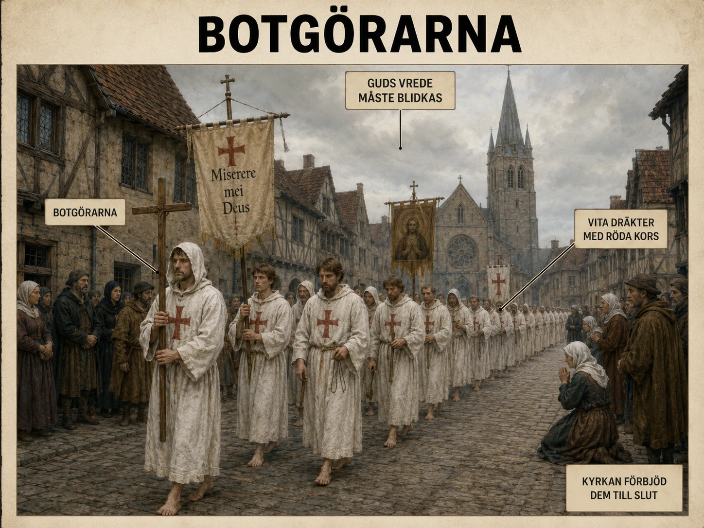

Pesten som tecken
När digerdöden spreds genom Europa på 1300-talet var det många som inte i första hand såg pesten som en sjukdom. De såg den som ett tecken. För dem var katastrofen inte bara biologisk, utan religiös. Om så många människor dog, måste det betyda att Gud var vred. Om Gud var vred, måste människorna ha syndat. Och om människorna hade syndat, behövde de visa ånger.
Ur denna tankevärld växte flagellantrörelsen fram.
Vad var en flagellant?
Ordet flagellant kommer från ett latinskt ord som betyder att piska eller gissla. Flagellanter var grupper av människor som vandrade från stad till stad och offentligt straffade sina egna kroppar som ett tecken på ånger. De trodde att deras lidande kunde blidka Gud och kanske stoppa pesten.
Det är viktigt att vi i dag beskriver detta sakligt och historiskt. Det handlar inte om att skildra självskada som något lockande eller dramatiskt, utan om att förstå hur människor i en annan tid försökte skapa mening i en katastrof de inte kunde förklara.
När rörelsen växte
Flagellanter fanns redan före digerdöden, men under peståren på 1340-talet växte rörelsen kraftigt. Särskilt i Centraleuropa drog grupper genom städer och byar. De kunde komma in genom stadsportarna i ordnade processioner, sjungande religiösa sånger, ibland med kors, fanor och enkla kläder.
Människor samlades för att se dem. För en medeltida åskådare kunde det ha varit en stark upplevelse: mitt i döden kom en grupp människor som påstod sig bära fram ånger för hela samhället.

Två sätt att förklara sjukdom
För att förstå flagellanterna måste man förstå medeltidens religiösa världsbild. I dag skiljer många människor mellan naturvetenskapliga förklaringar och religiösa tolkningar. En sjukdom kan förklaras genom bakterier, virus, smittvägar och immunförsvar.
På 1300-talet fanns inte denna moderna kunskap. Sjukdom kunde förklaras på flera sätt samtidigt: genom dålig luft, planeternas ställning, kroppens vätskor — men också genom synd och Guds straff.
Det betyder inte att medeltidens människor var dumma. De använde de förklaringsmodeller de hade. Problemet var att deras modeller inte räckte till. När pesten dödade människor på bara några dagar blev krisen så stor att vanliga religiösa ritualer kunde kännas otillräckliga.
När prästens välsignelse inte räcker
Bön, mässa, bikt och prästens välsignelse var viktiga, men många upplevde att något mer krävdes. Flagellanterna erbjöd ett svar: om samhället var skyldigt, måste samhället visa extrem ånger.
Rörelsen var därför både religiös och social. Den gav människor en känsla av kontroll. Att se pesten spridas utan att kunna stoppa den måste ha varit fruktansvärt. Flagellanterna gjorde något synligt. De vandrade, sjöng, bad och visade ånger. I en tid då nästan allt kändes kaotiskt skapade de ordning och ritual.
Varför kyrkan blev orolig
Men rörelsen blev snabbt problematisk för kyrkan. Den katolska kyrkan hade redan etablerade sätt att hantera synd och förlåtelse: bikt, botgöring, mässa och prästerlig auktoritet. Flagellanterna rörde sig ofta utanför denna kontroll.
De kunde uppträda som om deras egna processioner var ett lika starkt eller starkare medel än kyrkans sakrament. Vissa grupper utvecklade egna regler, egna ledare och egna budskap. Det hotade kyrkans auktoritet.
Det fanns också en politisk dimension. Stora grupper som vandrade från stad till stad kunde skapa oro. De drog till sig folkmassor. De kunde påverka stämningen i en stad, särskilt när människor redan var rädda. Ibland kopplades flagellantrörelsen också till antijudiska stämningar. När människor sökte synd och skuld kunde rörelsen bidra till att peka ut fiender, även om alla flagellanter inte gjorde det. I en pestdrabbad stad kunde religiös upphetsning, rykten och våldsam rädsla bli en farlig blandning.
1349 — påvens förbud
Kyrkan började därför se flagellanterna som ett hot. År 1349 fördömde påven Clemens VI rörelsen. Kyrkan ville stoppa deras verksamhet eftersom den riskerade att sprida oordning, falska religiösa idéer och motstånd mot kyrkans kontroll.
Det var inte ånger i sig som kyrkan vände sig emot. Botgöring var en central del av kristendomen. Problemet var att flagellanterna gjorde sin botgöring offentlig, kollektiv och delvis oberoende av kyrkans ledning.
Folklig religiositet möter kyrklig auktoritet
Flagellanterna visar därför en viktig konflikt i medeltidens samhälle: konflikten mellan folklig religiositet och kyrklig auktoritet.
Folklig religiositet betyder hur vanliga människor levde och uttryckte sin tro. Den kunde vara stark, känslomässig och konkret. Kyrklig auktoritet handlade om präster, biskopar och påvar som ville styra läran och ritualerna. Under normala tider kunde dessa två fungera tillsammans. Under katastrofer kunde de kollidera.
När fienden är osynlig
Det är också viktigt att se att flagellanterna inte bara var ett märkligt undantag. De visar hur människor försöker hantera meningslöshet. En epidemi är särskilt svår att förstå eftersom fienden är osynlig. Det finns ingen armé att möta, ingen borg att försvara, ingen tydlig angripare. Sjukdomen verkar komma från ingenstans.
Då blir frågan inte bara "hur stoppar vi detta?", utan också "varför händer detta?" Flagellanterna svarade: det händer för att människorna har syndat.
Det svaret kan kännas främmande för oss, men behovet bakom svaret är inte främmande. Även i modern tid söker människor mönster i katastrofer. De vill veta vem som bär ansvar, vad som gick fel och vad man kan göra. Skillnaden är att moderna samhällen har naturvetenskapliga verktyg: laboratorier, statistik, smittspårning, läkemedel och myndigheter. Men även i moderna kriser kan rykten, rädsla och symbolhandlingar få stor kraft.
Kroppen som språk
För elever i dag kan flagellanterna därför fungera som ett fönster in i medeltidens tankevärld. De visar hur nära religion, kropp, samhälle och katastrof hängde samman. Kroppen blev ett språk. Genom att visa lidande ville flagellanterna säga: vi ångrar oss, vi ber om förlåtelse, vi försöker rädda världen.
Begränsningen i deras tänkande
Samtidigt visar historien begränsningen i deras tänkande. Pesten stoppades inte av deras vandringar. Deras handlingar kunde inte påverka bakterier, loppor eller smittvägar. I värsta fall kunde stora folksamlingar till och med bidra till oro och smittspridning. Men för människorna då kunde detta inte vara självklart. De agerade utifrån sin förståelse av världen.
Det gör flagellanterna till ett av de mest fascinerande exemplen på hur människor reagerar när verkligheten blir för skrämmande. De försökte omvandla panik till ritual, skuld till handling och katastrof till religiös mening.
När ånger blir fanatism
Men deras historia har också en varning. När en kris tolkas enbart som straff och skuld kan människor börja leta efter syndare i stället för orsaker. Då kan ånger övergå i fanatism, och religiös iver kan bidra till social oro.
Därför är flagellanterna inte bara en berättelse om medeltida fromhet. De är också en berättelse om hur farligt det kan bli när människor saknar kunskap men har starka behov av förklaringar.
Digerdöden drabbade Europas kroppar. Flagellanterna visar hur den också drabbade Europas föreställningsvärld. Pesten dödade människor, men den skakade också deras bild av Gud, samhället och den egna skulden.